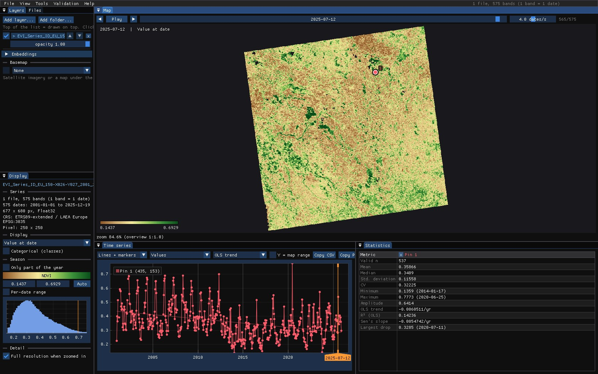
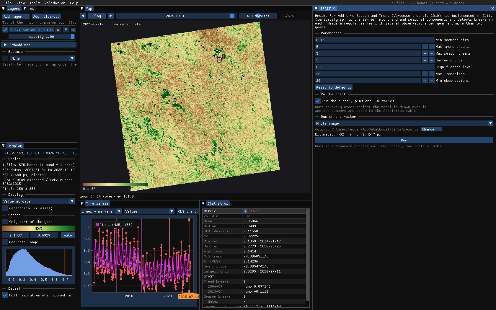
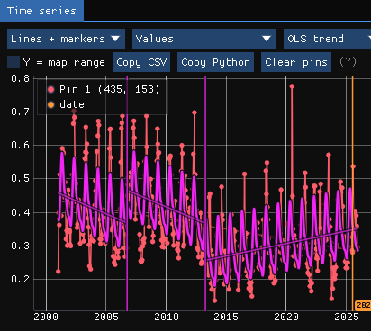
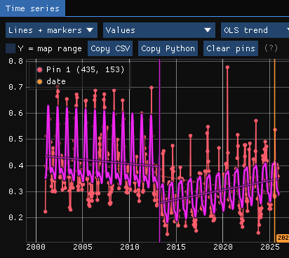
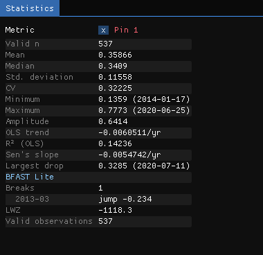
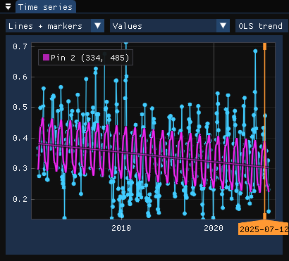
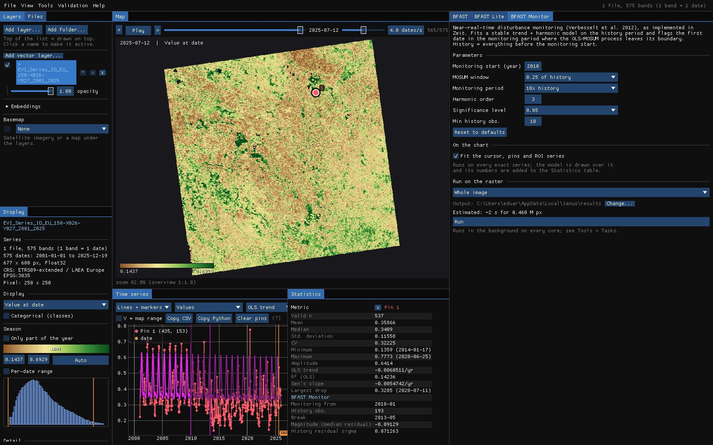
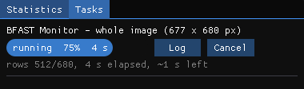
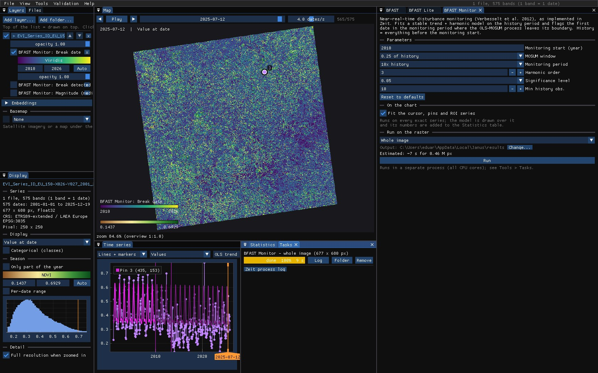
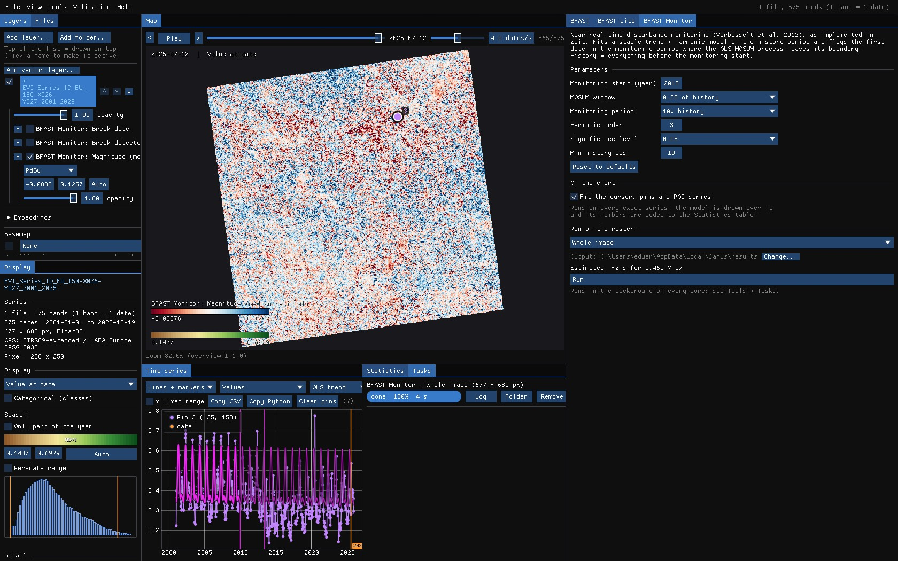

01The idea
A vegetation index over the years is the sum of a trend (the slow rise or fall of the cover), a season (the yearly cycle, modelled with harmonics) and noise. BFAST (Verbesselt et al. 2010) fits both and tests whether they hold over the whole series; where they do not, it finds the dates of the breaks: a jump of the trend (a clearing, a fire, a new crop) or a change of the seasons (a field turned into a forest, or a double crop). Between two breaks, each part has its own straight trend.
- Trend break
- The level of the series jumps, or its slope changes.
- Season break
- The shape of the yearly cycle changes.
- Magnitude
- The model after the break minus the model before it, on the first observation after it.
The three tools need a regular series (evenly spaced dates: 16-day, monthly) with at least two observations a year. A missing date must be a date with no data, not a date left out: the seasons are fitted on the time axis.
| Tool | Finds | Speed |
|---|---|---|
| BFAST | Breaks of the trend and of the season, apart, by iterating the two. | slowest |
| BFAST Lite | Breaks of one model with trend and season, the number chosen by the LWZ criterion (Masiliunas et al. 2021). | faster |
| BFAST Monitor | The first date, after a stable history, where the observations leave the model (Verbesselt et al. 2012). | fast |
02The example
MODIS EVI every 16 days, January 2001 to December 2025 (575 dates), at 250 m, over 170 × 170 km of western France: fields of cereals and sunflowers, grassland, woods. One GeoTIFF with a band per date, named EVI_2001_01_01 and so on: Janus reads the dates from the names. Dates without a clear value are no data, so the series stays regular.


03BFAST
Tools → BFAST. On the chart, the fitted model (trend plus season) and, lighter, the trend alone, with a vertical line at each break.




| Parameter | Default | What it does |
|---|---|---|
| Min segment size | 0.15 | The shortest segment, as a share of the valid observations: no two breaks closer than that. |
| Max trend breaks / season breaks | 5 / 5 | The most breaks searched for in each component. |
| Harmonic order | 3 | Pairs of sines and cosines of the season: 1 is a single wave a year, 3 allows a double crop. |
| Significance level | 0.05 | A component is searched for breaks only when the OLS-MOSUM test says it is not stable at this level. |
| Max iterations | 10 | Rounds of trend and season re-estimation. |
| Min observations | 20 | Pixels with fewer valid observations are not fitted. |
BFAST is thorough and slow: its window estimates 54 minutes for this image of 0.46 million pixels on every core. Use it on the chart, on an ROI or on the visible area.
04BFAST Lite
BFAST Lite fits one model, trend and season together, with up to Max breaks breaks, and picks how many by the LWZ information criterion. On the same pin it finds the 2013 break alone, with a jump of −0.23:




A break is a sudden change, not any change. On another pin whose EVI fell slowly over the years, BFAST Lite keeps a single segment: the decline is the trend.


05BFAST Monitor
BFAST Monitor asks another question: from a date on, does the land still behave as it did? It fits a stable model of trend and season on the history, everything before Monitoring start, and flags the first date in the monitoring period where the moving sum of the residuals leaves its boundary.


| Parameter | Default | What it does |
|---|---|---|
| Monitoring start | 0 | A decimal year (2010 here); 0 monitors the last quarter of the series. |
| MOSUM window | 0.25 | The moving sum's window, as a share of the history. |
| Monitoring period | 10× | How long the monitoring may be, relative to the history (it sets the boundary). |
| Harmonic order | 3 | The season's harmonics. |
| Significance level | 0.05 | Of the boundary: lower, fewer and surer breaks. |
| Min history obs. | 10 | Pixels with fewer valid observations in the history are not fitted. |
The history has to be stable: a break inside it spoils the model every later date is compared with. Pick the start after the changes you are not interested in.
06Running it on the image
The estimates in the three windows tell which to run where: on this image BFAST would take about an hour, BFAST Lite a few minutes for a zoomed-in area, BFAST Monitor seconds for the whole image. The run below is BFAST Monitor from 2010, over every pixel.

07The maps


Nearly every pixel breaks. That is not BFAST Monitor failing: in farmland the rotation changes the crop, and so the season, from one year to the next, and no model of 2001–2009 holds for long. BFAST Monitor is made for land that should stay the same (a forest, a protected area), where a departure is news. The magnitude says which way the land went:


| Tool | Maps |
|---|---|
| BFAST | Trend breaks, season breaks, date and magnitude of the largest trend break. |
| BFAST Lite | Breaks, date and magnitude of the largest break, date of the first. |
| BFAST Monitor | Break date, magnitude (median residual), break detected (0/1). |
A break's date is that of the first observation after it, as in Zeit's extract_events. Hover the map with a result on top: the chart shows the pixel's series with the model, to see what each colour stands for.
08What next
- The seasons themselves: Phenology reads the start, peak and end of each season from the same kind of series.
- Several detectors: Tools → Agreement of change maps maps where BFAST, LandTrendr or CCDC agree.
- Validate the dates: the Validation guide.
- Script it:
zeit.bfast,zeit.bfast_liteandzeit.bfast_monitorin Python.
09References
- Verbesselt, J., Hyndman, R., Newnham, G., Culvenor, D. (2010). Detecting trend and seasonal changes in satellite image time series. Remote Sensing of Environment, 114, 106–115.
- Verbesselt, J., Zeileis, A., Herold, M. (2012). Near real-time disturbance detection using satellite image time series. Remote Sensing of Environment, 123, 98–108.
- Masiliunas, D., Tsendbazar, N.-E., Herold, M., Verbesselt, J. (2021). BFAST Lite: a lightweight break detection method for time series analysis. Remote Sensing, 13(16), 3308.
- Zeit: the change detection library behind the tools of Janus.